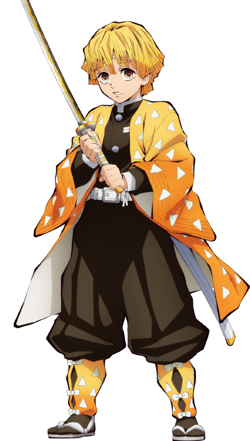

Tanjiro
CV: Natsuki Hanae
A kindhearted boy. He lived a blissful life with his mother and siblings, but his family was attacked by a demon while he was away from home.He joins the Demon Slayer Corps in order to turn his sister Nezuko, who has become a demon, back into a human, as well as to avenge the death of his family by hunting down the demon who killed them. Under the tutelage of Sakonji Urokodaki, Tanjiro learns to wield Water Breathing techniques in his fight against the demon threat.
Zenitsu
CV: Hiro Shimono
He joins the Demon Slayer Corps at the same time as Tanjiro and Inosuke. He has an acute sense of hearing and can identify the sounds made by other people or demons.In battle, when he is scared to death, he falls asleep and his personality changes to the swordsman that can unleash Thunder Breathing.

Inosuke
CV: Yoshitsugu
He joins the Demon Slayer Corps at the same time as Tanjiro and Zenitsu.He is extremely aggressive, always seen wearing a wild boar mask, and uses his Beast Breathing to rush headlong into battle.
Nezuko
CV: Abby Trott
Tanjiro's younger sister, who has been turned into a demon.Though a demon, she never attacks humans, thanks to both Urokodaki's hypnotic suggestion and the strength of her own will. She joins Tanjiro in his fight against the demons using her own demonic powers.
Tomioka
CV: Takahiro Sakurai
Giyu is a tall young man of a muscular stature and pale complexion, who is almost always seen wearing a serious and emotionless expression. He has unruly black hair of uneven lengths that sticks up in tufts around his head, which he wears tied back in a low messy ponytail at the base of his neck. His bangs fall over his eyes in an uneven fringe. His eyes are sharp and moderately large, their irises a deep sapphire that fades to a lighter blue and their pupils a bluish-black, and are framed by thin eyebrows.
Shinobu
CV: Saori Hayami
Known as Miss Kimetsu, the most popular girl in the Academy. She's a member of both the Pharmaceutical Research Club and the Fencing Club.